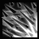
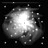
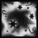
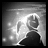

THE DRUID
The Median XL: Ultimative druid class is physically the weakest class in the game, but uses range and damage over time to his advantage or morphs into a fierce creature of nature.

BACKGROUND OF THE MEDIAN XL: ULTIMATIVE DRUID
Founded by Fiacla-Géar, the brother of the ancient barbarian king Bul-Kathos, at the twilight of the nephalem era, the druid colleges were created to centralise and safeguard all knowledge of the powers of the earth and the wild.
As deep within Arreat the Worldstone, created by Inarius to subdue humanity's powers, begun to take effect, humanity slowly but surely lost its powers over the generations. Seeing the end of their era, Fiacla-Géar and Bul-Kathos, themselves among the last of the nephalem, sought to safeguard their knowledge and wisdom during the upcoming dark era.
It is believed that Bul-Kathos was misled by Inarius' angelic appearance and vowed to protect the Worldstone with his tribe's blood. Fiacla-Géar, who was more suspicious about the crystal, was summarily exiled from the barbarian lands by an enraged Bul-Kathos. Even today, the spirit of Bul-Kathos lives on in Mount Arreat, burying trespassers with earthquakes and rockslides, unaware that he is fanatically protecting the stone that doomed humanity.
During his long exile, Fiacla-Géar learned to speak with the spirits of nature - figments of the earth itself, imbued with limited sentience and intelligence by the touch of Inarius and Lilith at Sanctuary's creation. He realised that the curse that had befallen the nephalem did not extend to all of Sanctuary. The earth was an untapped source of magic waiting for humanity to find it.
Tur Dulra and the other druidic colleges teach that humanity should follow no one, neither angelic nor demonic, but should seek the power within themselves and nature. Although the teachings are based on the lore within the druidic holy book, the Scual Fada, allegedly written by Fiacla-Géar but mysteriously in many different scripts and unknown languages, few remember their true origin. Outsiders often look down upon druids as tree huggers, but perhaps they may turn out to be the only ones who are right...
BASE STATS
Strength : 25
Dexterity : 20
Vitality : 15 (65 life)
Energy : 25 (25 mana)
+20 life, +20 mana per level
Gains +1 life per point into vitality
Gains +6 mana per point into energy
PREFERRED WEAPONS
Using the powers of nature, druids crafted many weapons out of untreated wood and stone to preserve the spirits within. To any outsider, the bows and staves are useless, being far too prone to breakage and not at all effective at channelling mana. When a druid wields such a weapon, however, their arrows mysteriously strike true over great distances and the very earth answers their call.
Although shapeshifting druids wield axes, maces or daggers to symbolise the fists and spines of their wereform, the weapon is assimilated in the shapeshifting process, making the details of its design moot. For this reason, the druid circles rely on outside suppliers to provide them with these weapons.
Base cast rate increased by 25% when wielding a staff (reduced number of frames).
Class-specific 2h weapon: Druid Staff
Also uses axes, maces and daggers
PREFERRED ARMOUR
After discovering his totem during his initiation ritual, a novice druid is likely to come across a dying specimen of the spirit animal in what would be an amazing coincidence if you believe in coincidence. If the animal approves of the druid, the druid ritually sacrifices the animal and consecrates the skin, enabling the animal spirit to guard the druid when he wears its furs or feathers.
Many druids have several totem animals. The most commonly seen animals are the wolf, hawk, falcon and ram. In the past, many druids attuned themselves to the feral spirits of the bear and direwolf, but this had undesirable side effects at full moon and often led to an early descent into madness or death by silver crossbow bolt.
SKILLS
| Name | Icon | Effect |
|---|---|---|
| TREEWARDEN FORM | Humans are among the weakest of nature's sons. To combat the spawn of hell more effectively, the druid communes with the mighty old
treants of the primeval forests and learns how to assume their shape. Effect: morph into a huge tree creature wielding an axe or mace | |
| PUMMEL | Treants tend to the mighty forests, removing old and sick trees and planting young saplings. The treewarden is blessed with giant fists to break dead wood and clear a path through parasitic overgrowth. Effect: melee attack that stuns and deals massive damage in an area | |
| CIRCLE OF LIFE | 
| The sacred circle of life ever turns. Ostara, Midsummer, Mabon, Yule. Animals are born and animals die. Each death feeds the Earth, and the Earth feeds his sons. Passive effect: returns life when you kill an enemy in treewarden form |
| WILDFIRE | In ancient times, druidic werebears roamed the woods, acting to prevent forest fires. Most descended into lycanthropic madness, and the survivors know that a controlled fire might stop the hellish blaze consuming the world. Effect: melee attack that unleashes a massive wave of fire | |
| IDOL OF SCOSGLEN | The master shapeshifter absorbs the essence of the earth, summoning a protective layer of solid stone to deflect enemy weapons. The spell can only be maintained for a short time and quickly shatters with devastating force. Effect: turn into stone, then break out of the stone, stunning enemies | |
| TRAP RAT FORM | Rare are the occasions when the forces of hell are outsmarted. When Baal twisted and mutated the native quill rats to giant and deadly monsters, the druids of Scosglen studied them and adopted the mutations themselves. Effect: morph into a giant quill rat wielding a dagger | |
| QUILL STORM |  | Created by Baal's fleshbender mages, this barrage of razor spines spelled the death of many adventurers and inspired the druid circles. Effect: shoot a stream of spikes at a random nearby enemy |
| EGG TRAP | 
| Despite what some jokers may tell you, shapeshifters cannot reproduce in animal form. While druids of the spine are capable of laying eggs, those eggs contain only more spines and sinew under tension. Effect: lay an egg that sprays the area with spikes when stepped on |
| FEROCITY | 
| Not satisfied with merely taking Baal's designs, the druids applied selective evolution to actually improve upon them, solving the known combat weakness of the trap rats, their very slow reaction time. Passive effect: increases attack rate and damage in trap rat form |
| THORN WALL | Using one of their more mysterious combat techniques, trap rat shapeshifters create a barrier of spines at any distance, keeping the enemy army at bay with ease. Effect: creates a wall of spikes | |
| WEREWOLF FORM | Scéal Fada, first of the druids, barely survived his encounter with the Great Wolf. Once his foe was defeated, he fought for many moons to safeguard his sanity from the beast now clawing within. He emerged from this inner struggle with the knowledge to teach the form of the apex predator. Effect: transform into a nocturnal hunter with savage melee abilities | |
| MANA PULSE | 
| Unable to replenish spiritual energy by meditaion while transformed, werewolf shapshifters harvest it from their adversaries with primal strikes. Effect: melee attack that harvests mana |
| HARBINGER | The unparalleled speed and agility of those who are able to master the shape of the beast are legendary. Closing in great distances in a flash, werewolves deliver swift death to their enemies. Effect: collide with prey in a surge of ravenous hunger | |
| FEED THE PACK | The savage bite and self-restoring lacerations of the wolf are the great levellers. "For the start of New life there must be death, be free now demons for you have paid your debt." Passive effect: slain enemies heal you and respawn as wolf allies | |
| TWISTED CLAW | 
| Elders who have mastered both the primal force of the wind and the shape of the beast are capable of summonning freezing gales with their furious attacks. Effect: melee hit that creates a fast-hitting tornado |
| ELEMENTAL | Dances and sacrifices to the volcano spirits strengthen the pact between the druid circles and this particular force of nature. In return, the fire spirits heed the druid?s call in battle. Effect: running fire spirits that explode on the target | |
| HUNTING BANSHEE | These wailing spirits of winter can be heard when the wind howls through the iced caves of North Scosglen. Briefly conjured by a druid, their shriek chills enemies to the bone. Effect: spirit chases random enemies and unleashes a frost nova | |
| PAGAN RITES | 
| Druids believe that life is governed by a circle of life and death. Druidic burial rites are happy and cheerful, for the deceased's death will give rise to new life. Effect: sacrifices corpses in flames, restoring lost life |
| RAIN OF FIRE | A hail of lava bombs from a distant volcanic eruption rains down to strike the target anywhere in the world, carried by favourable winds. Effect: rain of fire bombards target, then expands over an area | |
| FREEZING GALE |  | By entering a mystical trance, the master lorekeeper disturbs the local weather patterns, creating a howling storm of supercooled air that remains in the area until the druid's powers eventually fade. Effect: press and hold button to invoke an outward blowing freezing wind |
| POISON FLASH | To a druid, a creature's poison glands naturally evolved over thousands of generations are superior to any of man's sorcerous attempts to magically enslave nature and use it against his enemies. Effect: short ranged poison splash around caster | |
| ELVENSONG | The druid conjures a spirit of nature to sing an ancient and powerful siren song in the language of the birds and the Earthfather?s creations. The elfin melody charms animals and even most twisted demons. Effect: spirit of nature converts enemies to fight for you | |
| PLAGUE AVATAR | It is a common misconception among the uninitiated that all spirits of nature are like the charming dryads or warlike nereids. But fungi and bacteria are also among the sons of the Earthfather and have their own guardian spirits. Effect: floating avatar surrounded by poison clouds | |
| MYTHAL |  | Old druidic lore tells of the elves, Inarius' first creations that lived and were destroyed by the mad angel before humans saw the light of day. All that remains are ancient ruins and strange antimagical enchantments. Effect: creates a field that breaks enemy resistances |
| SUMMON ACID FIENDS | The Earthfather?s mutated children emerge from their den at the calling of the archdruid. Considered a failure of creation, the creatures still fight viciously, belching corrosive acid on their enemies. Effect: frenzied creatures with a poison splash attack | |
| LAUGHING GHOST | Wyrdlights, goblins, ghosts and other minor sprites of nature are a playful lot. Launched from a druid's bow, this bone ghost explodes into shrapnel in the midst of the enemies, which it finds hilarious. Effect: shoots a bone flayer that explodes after a set distance | |
| CASCADE | The spirits of the nymphs lend their arrows and bowstrings to the druid's cause, allowing one druid to keep an army at bay. Effect: shoots arrows at all nearby enemies | |
| SPORE SHOT | This parasitic arrow burrows into the target, devouring its flesh with its magical teeth and evolving into two identical copies of itself which then spread among the living. Effect: arrow that repeatedly splits on striking | |
| ELFIN WEAPONS | The adept hunter communes with the nixes and pixies of the nature world, teachers of mystical combat techniques and weaponcraft. Passive effect: increases damage and crushing blow | |
| NOVA SHOT | The master hunter knows that the spirits of nature are all around us. In his forests, none shall surprise the druid and none shall dodge his arrows. Effect: shoots a ring of arrows | |
UBERSKILLS
You may choose a single uberskill at character level 90 and above.
| Name | Icon | Effect |
|---|---|---|
| FORCE OF NATURE | Where willpower fails, brute strength may suffice. The Earthfather favours the strong and culls the weak from the herd. Passive effect: increases spell damage based on your strength | |
| FAERIE FIRE |  | The hunter leaves a cloud of pixie dust in his footsteps. The glittering dust sears those who enter the cloud and its sparkling reflections distract attackers, causing them to miss. Effect: rainbow trail damages enemies and causes attacks to miss |
| TREMOR | At the call of the archdruid, the Earth itself rises up against the demonic taint and slams into the legions of hell. The bigger they are, the harder they fall. Effect: earthquake damages enemies by a percentage | |
ENNEAD SKILL
After completing the Ennead Challenge and keeping the Class Charm in the inventory while at character level 90 and above, you can invest points in this skill.
See THIS PAGE for more information about the Ennead Challenge.
| Name | Icon | Effect |
|---|---|---|
| GOODBERRY | The fruits of the Glor-An-Fhaidha, the mystical tree of life, can bring back mortals from the brink of
death. Wise druids look for large red berries growing on plants that ordinary do not bear fruit. Passive effect: create a Goodberry in the Horadric Cube that boosts life | |
BLACK ROAD SKILL
After completing the Black Road Challenge and keeping the Class Charm in the inventory while at character level 90 and above, you can invest points in this skill.
See THIS PAGE for more information about the Black Road Challenge.
| Name | Icon | Effect |
|---|---|---|
| LIFESHIELD | 
| Aside from their healing effect on humans and other animals, the juice of the Glor-An-Fhaidha's
fruits can be applied to armour, making it as hard as the bark of a thousand year tree. Passive effect: consuming a Goodberry also increases defence |
INNATE SKILL
Druids start with the following skill in their icon list.
| Name | Icon | Effect |
|---|---|---|
| MARK OF THE WILD | The druidic witchdoctor taps into the fury of the Earth and its beasts, invoking a brief battle rage in himself or a chosen ally. Effect: raises all damages | |